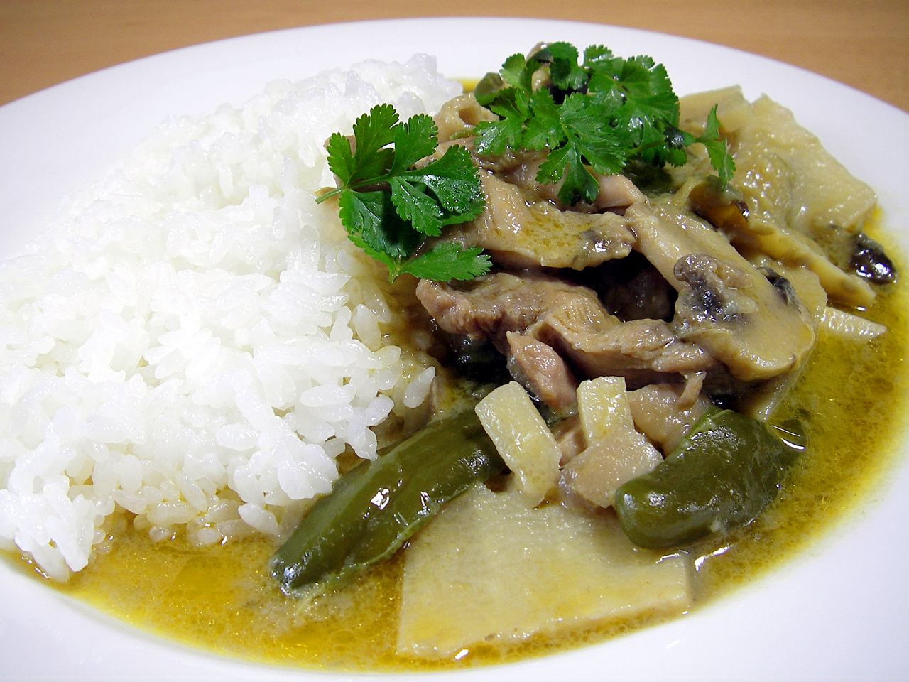
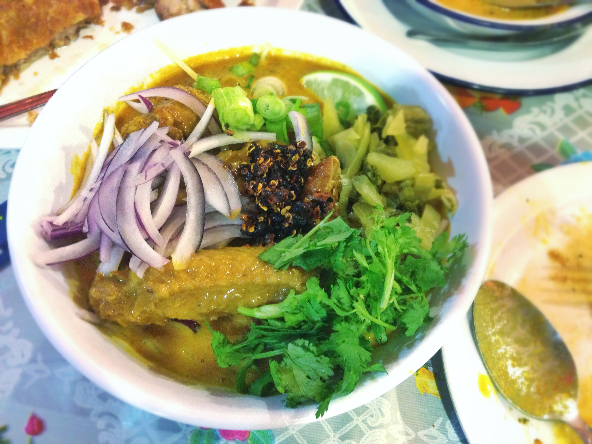

Thai Curries — Paste, coconut, and complexity
Thai curry paste is made fresh by pounding aromatics in a mortar — not from powder. The color of the paste indicates the chili used, which determines the heat level and flavor profile. Each paste has a different combination of aromatics rooted in centuries of tradition.

Green Curry (Gaeng Khiao Wan)
Paste: fresh green bird's eye chiles, lemongrass, galangal, shallots, garlic, kaffir lime zest, coriander root. In coconut milk with Thai eggplant, bamboo shoots, and Thai basil. The hottest of the three major curries — fresh chiles deliver sharper heat than dried.
Red Curry (Gaeng Phet)
Paste: dried red chiles (less sharp, more fruity than green), lemongrass, galangal, shallots, garlic, shrimp paste. Versatile — pairs with chicken, beef, duck, pork, or tofu. Red curry duck with lychee is a beloved restaurant presentation. Richer, more complex than green.
Yellow Curry (Gaeng Garee)
Influenced by Indian cuisine — turmeric, yellow curry powder, dried red chiles, lemongrass, and coconut milk. Mildest Thai curry. Often with potatoes and onion alongside chicken. Sweeter, earthier, more accessible to those new to Thai food.

Massaman Curry
Muslim-influenced curry paste: dried red chiles, roasted whole spices (cardamom, cinnamon, cloves, star anise, cumin, nutmeg, mace). Coconut milk, palm sugar, tamarind, potatoes, peanuts. The deepest, most complex Thai curry — mellow heat with extraordinary aromatic depth.
Panang Curry
A drier, richer red curry variant. Ground peanuts in the paste (differentiator). Less coconut milk than standard red curry — thicker, more concentrated. Finished with kaffir lime leaves sliced thin on top. Beef panang is the classic; the sauce coats the meat densely.

Khao Soi
Northern Thailand's signature — a red/yellow curry paste–based coconut broth with egg noodles, served with both soft braised noodles in the soup AND crispy fried noodles on top. Two textures, one bowl. Chicken or beef. Topped with shallots, pickled mustard greens, and chili oil.